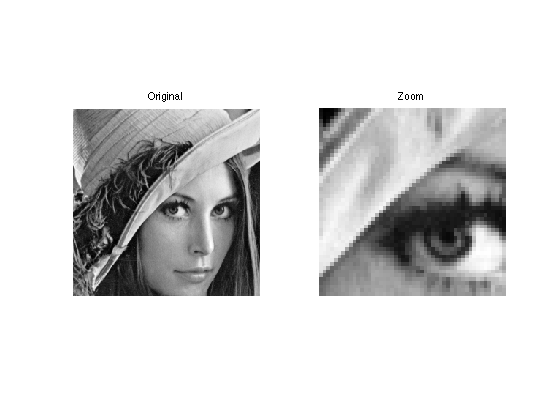
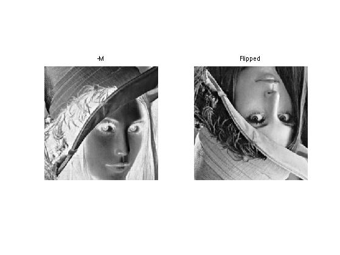
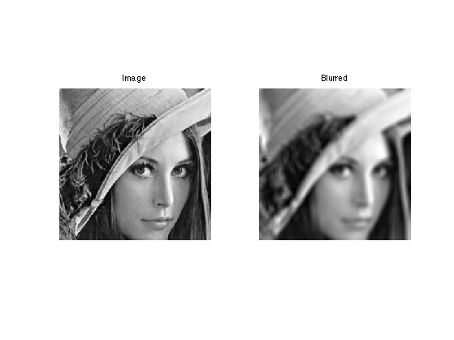
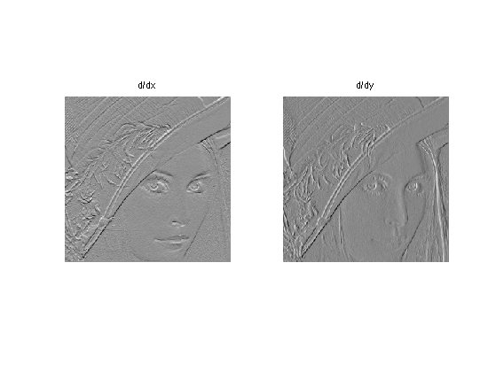
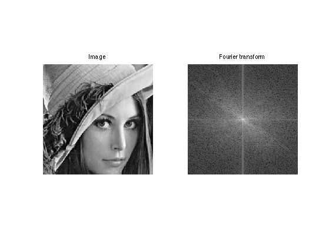
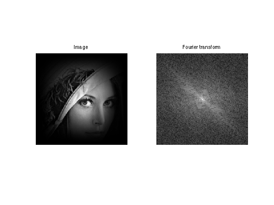
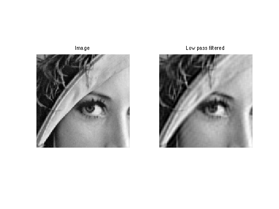
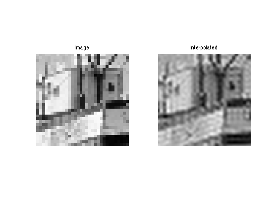
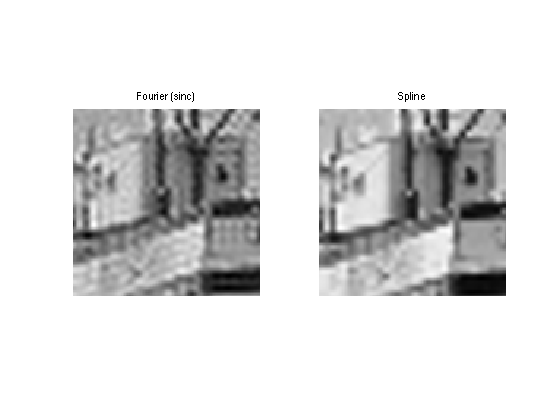

\[
\newcommand{\NN}{\mathbb{N}}
\newcommand{\CC}{\mathbb{C}}
\newcommand{\GG}{\mathbb{G}}
\newcommand{\LL}{\mathbb{L}}
\newcommand{\PP}{\mathbb{P}}
\newcommand{\QQ}{\mathbb{Q}}
\newcommand{\RR}{\mathbb{R}}
\newcommand{\VV}{\mathbb{V}}
\newcommand{\ZZ}{\mathbb{Z}}
\newcommand{\FF}{\mathbb{F}}
\newcommand{\KK}{\mathbb{K}}
\newcommand{\UU}{\mathbb{U}}
\newcommand{\EE}{\mathbb{E}}
\newcommand{\Aa}{\mathcal{A}}
\newcommand{\Bb}{\mathcal{B}}
\newcommand{\Cc}{\mathcal{C}}
\newcommand{\Dd}{\mathcal{D}}
\newcommand{\Ee}{\mathcal{E}}
\newcommand{\Ff}{\mathcal{F}}
\newcommand{\Gg}{\mathcal{G}}
\newcommand{\Hh}{\mathcal{H}}
\newcommand{\Ii}{\mathcal{I}}
\newcommand{\Jj}{\mathcal{J}}
\newcommand{\Kk}{\mathcal{K}}
\newcommand{\Ll}{\mathcal{L}}
\newcommand{\Mm}{\mathcal{M}}
\newcommand{\Nn}{\mathcal{N}}
\newcommand{\Oo}{\mathcal{O}}
\newcommand{\Pp}{\mathcal{P}}
\newcommand{\Qq}{\mathcal{Q}}
\newcommand{\Rr}{\mathcal{R}}
\newcommand{\Ss}{\mathcal{S}}
\newcommand{\Tt}{\mathcal{T}}
\newcommand{\Uu}{\mathcal{U}}
\newcommand{\Vv}{\mathcal{V}}
\newcommand{\Ww}{\mathcal{W}}
\newcommand{\Xx}{\mathcal{X}}
\newcommand{\Yy}{\mathcal{Y}}
\newcommand{\Zz}{\mathcal{Z}}
\newcommand{\al}{\alpha}
\newcommand{\la}{\lambda}
\newcommand{\ga}{\gamma}
\newcommand{\Ga}{\Gamma}
\newcommand{\La}{\Lambda}
\newcommand{\Si}{\Sigma}
\newcommand{\si}{\sigma}
\newcommand{\be}{\beta}
\newcommand{\de}{\delta}
\newcommand{\De}{\Delta}
\renewcommand{\phi}{\varphi}
\renewcommand{\th}{\theta}
\newcommand{\om}{\omega}
\newcommand{\Om}{\Omega}
\renewcommand{\epsilon}{\varepsilon}
\newcommand{\Calpha}{\mathrm{C}^\al}
\newcommand{\Cbeta}{\mathrm{C}^\be}
\newcommand{\Cal}{\text{C}^\al}
\newcommand{\Cdeux}{\text{C}^{2}}
\newcommand{\Cun}{\text{C}^{1}}
\newcommand{\Calt}[1]{\text{C}^{#1}}
\newcommand{\lun}{\ell^1}
\newcommand{\ldeux}{\ell^2}
\newcommand{\linf}{\ell^\infty}
\newcommand{\ldeuxj}{{\ldeux_j}}
\newcommand{\Lun}{\text{\upshape L}^1}
\newcommand{\Ldeux}{\text{\upshape L}^2}
\newcommand{\Lp}{\text{\upshape L}^p}
\newcommand{\Lq}{\text{\upshape L}^q}
\newcommand{\Linf}{\text{\upshape L}^\infty}
\newcommand{\lzero}{\ell^0}
\newcommand{\lp}{\ell^p}
\renewcommand{\d}{\ins{d}}
\newcommand{\Grad}{\text{Grad}}
\newcommand{\grad}{\text{grad}}
\renewcommand{\div}{\text{div}}
\newcommand{\diag}{\text{diag}}
\newcommand{\pd}[2]{ \frac{ \partial #1}{\partial #2} }
\newcommand{\pdd}[2]{ \frac{ \partial^2 #1}{\partial #2^2} }
\newcommand{\dotp}[2]{\langle #1,\,#2\rangle}
\newcommand{\norm}[1]{|\!| #1 |\!|}
\newcommand{\normi}[1]{\norm{#1}_{\infty}}
\newcommand{\normu}[1]{\norm{#1}_{1}}
\newcommand{\normz}[1]{\norm{#1}_{0}}
\newcommand{\abs}[1]{\vert #1 \vert}
\newcommand{\argmin}{\text{argmin}}
\newcommand{\argmax}{\text{argmax}}
\newcommand{\uargmin}[1]{\underset{#1}{\argmin}\;}
\newcommand{\uargmax}[1]{\underset{#1}{\argmax}\;}
\newcommand{\umin}[1]{\underset{#1}{\min}\;}
\newcommand{\umax}[1]{\underset{#1}{\max}\;}
\newcommand{\pa}[1]{\left( #1 \right)}
\newcommand{\choice}[1]{ \left\{ \begin{array}{l} #1 \end{array} \right. }
\newcommand{\enscond}[2]{ \left\{ #1 \;:\; #2 \right\} }
\newcommand{\qandq}{ \quad \text{and} \quad }
\newcommand{\qqandqq}{ \qquad \text{and} \qquad }
\newcommand{\qifq}{ \quad \text{if} \quad }
\newcommand{\qqifqq}{ \qquad \text{if} \qquad }
\newcommand{\qwhereq}{ \quad \text{where} \quad }
\newcommand{\qqwhereqq}{ \qquad \text{where} \qquad }
\newcommand{\qwithq}{ \quad \text{with} \quad }
\newcommand{\qqwithqq}{ \qquad \text{with} \qquad }
\newcommand{\qforq}{ \quad \text{for} \quad }
\newcommand{\qqforqq}{ \qquad \text{for} \qquad }
\newcommand{\qqsinceqq}{ \qquad \text{since} \qquad }
\newcommand{\qsinceq}{ \quad \text{since} \quad }
\newcommand{\qarrq}{\quad\Longrightarrow\quad}
\newcommand{\qqarrqq}{\quad\Longrightarrow\quad}
\newcommand{\qiffq}{\quad\Longleftrightarrow\quad}
\newcommand{\qqiffqq}{\qquad\Longleftrightarrow\qquad}
\newcommand{\qsubjq}{ \quad \text{subject to} \quad }
\newcommand{\qqsubjqq}{ \qquad \text{subject to} \qquad }
\]
Introduction to Image Processing
This numerical tour explores some basic image processing tasks.
Contents
Installing toolboxes and setting up the path.
You need to download the following files: signal toolbox and general toolbox.
You need to unzip these toolboxes in your working directory, so that you have toolbox_signal and toolbox_general in your directory.
For Scilab user: you must replace the Matlab comment '%' by its Scilab counterpart '//'.
Recommandation: You should create a text file named for instance numericaltour.sce (in Scilab) or numericaltour.m (in Matlab) to write all the Scilab/Matlab command you want to execute. Then, simply run exec('numericaltour.sce'); (in Scilab) or numericaltour; (in Matlab) to run the commands.
Execute this line only if you are using Matlab.
getd = @(p)path(p,path);
Then you can add the toolboxes to the path.
getd('toolbox_signal/');
getd('toolbox_general/');
Image Loading and Displaying
Several functions are implemented to load and display images.
First we load an image.
name = 'lena';
n = 256;
M = load_image(name, []);
M = rescale(crop(M,n));
We can display it. It is possible to zoom on it, extract pixels, etc.
clf;
imageplot(M, 'Original', 1,2,1);
imageplot(crop(M,50), 'Zoom', 1,2,2);

Image Modification
An image is a 2D array, that can be modified as a matrix.
clf;
imageplot(-M, '-M', 1,2,1);
imageplot(M(n:-1:1,:), 'Flipped', 1,2,2);

Blurring is achieved by computing a convolution with a kernel.
k = 9;
h = ones(k,k);
h = h/sum(h(:));
Mh = perform_convolution(M,h);
clf;
imageplot(M, 'Image', 1,2,1);
imageplot(Mh, 'Blurred', 1,2,2);

Several differential and convolution operators are implemented.
G = grad(M);
clf;
imageplot(G(:,:,1), 'd/dx', 1,2,1);
imageplot(G(:,:,2), 'd/dy', 1,2,2);

Fourier Transform
The 2D Fourier transform can be used to perform low pass approximation and interpolation (by zero padding).
Compute and display the Fourier transform (display over a log scale). The function fftshift is useful to put the 0 low frequency in the middle. After fftshift, the zero frequency is located at position (n/2+1,n/2+1).
Mf = fft2(M);
Lf = fftshift(log( abs(Mf)+1e-1 ));
clf;
imageplot(M, 'Image', 1,2,1);
imageplot(Lf, 'Fourier transform', 1,2,2);

Exercice 1: (check the solution) To avoid boundary artifacts and estimate really the frequency content of the image (and not of the artifacts!), one needs
to multiply M by a smooth windowing function h and compute fft2(M.*h). Use a sine windowing function. Can you interpret the resulting filter ?
exo1;

Exercice 2: (check the solution) Perform low pass filtering by removing the high frequencies of the spectrum. What do you oberve ?
exo2;

It is possible to do image interpolating by adding high frequencies
p = 64;
n = p*4;
M = load_image('boat', 2*p); M = crop(M,p);
Mf = fftshift(fft2(M));
MF = zeros(n,n);
sel = n/2-p/2+1:n/2+p/2;
sel = sel;
MF(sel, sel) = Mf;
MF = fftshift(MF);
Mpad = real(ifft2(MF));
clf;
imageplot( crop(M), 'Image', 1,2,1);
imageplot( crop(Mpad), 'Interpolated', 1,2,2);

A better way to do interpolation is to use cubic-splines. It avoid ringing artifact because the spline kernel has a smaller
support with less oscillations.
Mspline = image_resize(M,n,n);
clf;
imageplot( crop(Mpad), 'Fourier (sinc)', 1,2,1);
imageplot( crop(Mspline), 'Spline', 1,2,2);
